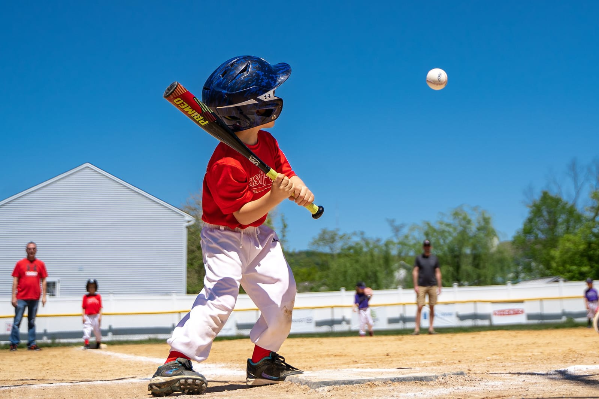

Béisbol
Es un deporte al que se juega con un bate, una pelota y tiene lugar al aire libre. Consiste en batear a esa pelota con el bate para ponerla en juego. Mientras, el jugador que bateó corre por el campo con la misión de lograr varias bases hasta llegar a dar la vuelta completa y regresar al lugar desde donde dio el golpe.
Aquí te dejo unas características hacen que el béisbol sea un deporte fascinante y querido en muchas culturas.
- La defensa tiene la pelota: A diferencia de otros deportes, en el béisbol la defensa es la que tiene la pelota, lo que lo hace más estratégico y emocionante.
- Campo de juego: El béisbol se juega en un gran campo cubierto completamente por césped natural o artificial, con excepción de una zona llamada línea del corredor, donde los jugadores de la ofensiva corren para alcanzar las bases.
- Diversidad de roles: Cada jugador tiene un rol específico, desde el lanzador hasta el jardinero, lo que permite que diferentes habilidades y talentos se destaquen.